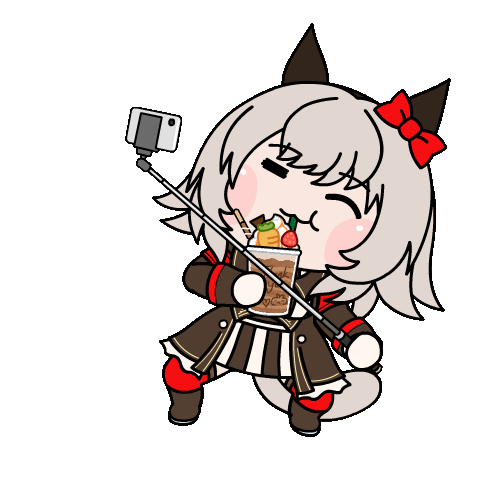
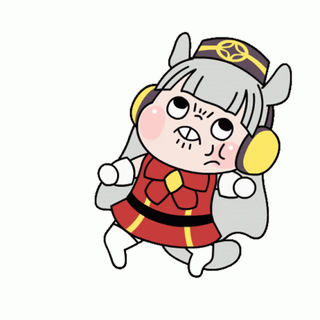
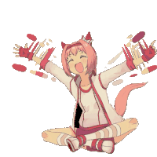
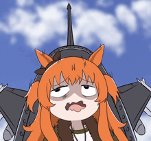
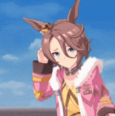
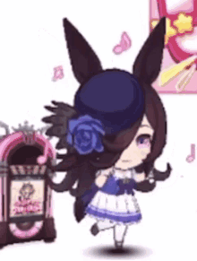
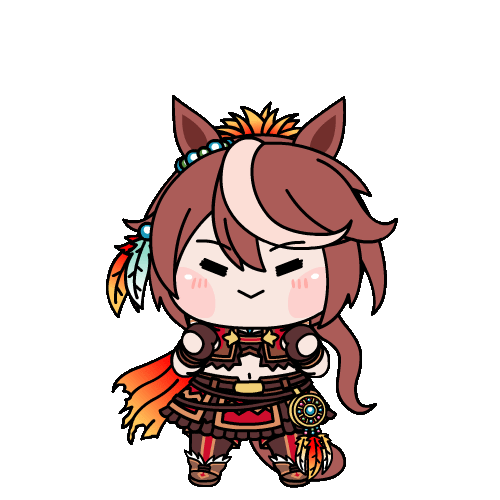
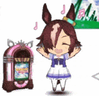

Character Guide
Pull Strategy
Don't chase the meta racing umas. Even if you pull the uma with the longest streak of dominance, Christmas Oguri, winning a Champions Meeting event is only +1500 Carats over coming in last. With a pity costing 30,000 Carats, it takes far too many wins to offset the potential investment. Most of them are only good on a few tracks, too. And with the accelerated Global pace, they'll probably have even less places to shine. Chasing meta umas is for whales.
So, pull the umas you like. I (Erzzy) built Mejiro Dober for every single Champions Meeting after her release, and I know people who did the same for Haru Urara. Though, Christmas Oguri is a unique and fun uma to build…
You can also aim for the good parent umas, to strengthen the umas you like. Ones with acceleration ultimates tend to be best early on, such as Seiun Sky, Mejiro Dober, and so on. There are often two+ ultimates you want to inherit, so having them yourself is good, and they last longer than racing-focused umas. Many of them are added as Daily Legend Races though, so you can get them from that instead of pulling for them.
Uma-Specific Tips
Any rewards mentioned for completing a series of races is affected by your Race Bonus.
Agnes Tachyon
If you run Satsuki Sho (the third goal) with your mood at normal or below, the fourth goal will change to NHK Mile. Since Agnes has a D in Mile normally, this isn't ideal, so make sure your mood is up.
Curren Chan
In late May of Senior Year, there's an event with the President. After this, there are three races, which if you win them all gives you bonus points. These are Hakodate Sprint Stakes (Late June), Keeneland Cup (Late August), and Centaur Stakes (Early September). Winning these will give you 25 energy, a mood up, 15 Speed and Power, and a hint for Sprint Gear. Since these are all in or around summer, it's likely only worth doing if you have bad summer training options.
Gold Ship
Sometimes, Gold Ship locks out 4 of the training options. When this happens, you can go for a race, rest, or date if the training isn't appealing.
If you win the Takarazuka Kinen (Late June) twice, then you will receive a mood up. The bottom conversation in the event will either give Charming, or the "Gatekept" skill. The skill isn't harmful for Gold Ship and reduces your score, so it can be something to go for if trying to make a B uma for Champions Meeting.
Haru Urara
To reach the fan goals required for the unique skill level ups, the JBC Sprint in Early November and the Champion's Cup in Early December are enough if you come in first in both. You need 12,000 fans to enter these races.
Mayano Top Gun
Her Shapeshifter event (win a G1 as each style) even gives her a good accel for every style, but isn't added until later. She also gets Fast Learner guaranteed if she has 600+ Wit when "Maya's Love Advice?!" triggers, making her appealing for chasing high scores. Normally, getting Fast Learner on a run is like a 4% chance (outside of the MANT scenario). You can just quit your Mayano runs when they hit that event early and try again, once you're able to do Wit builds (or inherit it).
Mejiro McQueen
If you win the Fall Triple Crown in Senior Year, you'll receive +15 Speed, Stamina, Guts, and Skill Points. These races are Tenno Sho Fall (Late October), Japan Cup (Late November), and Arima Kinen (Late December).
Narita Taishin
In early October of Classic Year, there's an event where Taishin receives 3 mood downs and Poor Practice. After Nikkei Sho, the next goal, the Poor Practice will be cured, and you'll receive 15 all stats and 63 Skill Points. However, if you cure the Poor Practice trait, then you'll receive Practice Perfect◎ (練習上手◎), a more powerful version of Practice Perfect, and 20 all stats and 70 Skill Points instead. It can be tempting to not cure Poor Practice when you get it, but in this case, you should deal with it for the benefits. These numbers are affected by your Race Bonus.
Rice Shower
The race that most often kills Rice Shower runs is Tenno Sho Spring, her sixth objective. Make sure to have 600 stamina by this point. If you have less, you might have to buy recovery skills for safety.
TM Opera O
If you win the Fall Triple Crown, you'll receive +10 all stats and 20 skill points. These races are Tenno Sho Fall (Late October), Japan Cup (Late November), and Arima Kinen (Late December). You can do this both in Classic Year and in Senior Year.
Tokai Teio
Completing the Spring Triple Crown in Senior Year will give you +25 Speed and Power. These are Osaka Hai (Late March), Tenno Sho Spring (Late April), and the Takarazuka Kinen (Late June).
Vodka
Winning the Queen Elizabeth II Cup will give you a mood up.
Umas to Watch For
Here are notable umas that released throughout the game, mainly ones that are good parents for a long time. Meta racing umas are replaced frequently. Parent umas have better value for free to play players. Note that there are many ways to get umas. Daily Legend Races, pick tickets, and sometimes banners where you can spark (almost) any uma. So, you don't have to roll for them when they come up. Plus, you can borrow parents, or work them into your legacies as grandparents. You don't need every parent uma yourself.
These are umas that are still used as parents even today on the Japanese server, five years into the game's life. There are other good parents, but they get replaced by better options or are only used once ever. An uma in italics is just notable as being a particularly strong racing uma.
URA
- Taiki Shuttle - Sprint/Mile Pace/Late parent
- Mejiro McQueen - Often a decent parent for frontlines (Front/Pace)
- Maruzensky - Frequent parent for certain tracks, for various styles depending on the track
- Special Week - Often a decent parent for Pace/Late umas
- Narita Brian - Surprisingly frequently used parent for non-Front umas
- Seiun Sky - Forever useful and meta Front Runner parent
- Fuji Kiseki - After accel becomes common, a good frontline parent
Unity Cup
- Mejiro Dober - Meta defining Late/End parent for like 3 years, still comes up sometimes
- Christmas Oguri Cap - Dominant racing uma for quite a while on a variety of tracks with a unique build involving carefully timing recovery skills
- New Years TM Opera O - Always a very nice parent for most umas in Medium/Long
- Valentine's Mihono Bourbon - Meta Front Runner uma for… well, forever, so far
MANT
- Kitasan Black - Long distance Front Runner parent
- Ball Seiun Sky - Front Runner parent on tracks where Seiun Sky is bad
- Nishino Flower - Similar parent to Taiki with some different tracks
- Summer Gold Ship - Best parent for Team Trials and Debuffers
- Copano Rickey - Extremely dominant in every Dirt PvP event for years, 2-3 of those per year, with a unique build involving stacking green skills
Grand Live
- NY Kitasan Black - Medium distance Front/Pace parent
- Hokko Tarumae - Mile Dirt parent mainly for Pace/Late umas
- Valentine's Mejiro Ryan - Great parent on two specific tracks for non-Front umas
Grandmasters
- Sakura Laurel - Best healing unique to inherit in Long for Pace/Late umas
- Neo Universe - Medium distance backline parent and strong racer
- Sirius Symboli - Great parent for 2400m races, mainly Pace/Late umas
- Summer Agnes Tachyon - Good Medium parent for non-Front umas
L'Arc
Note that this scenario is unusually heavy on good support card releases, so these ones are even more skippable.
- Satono Crown - Similar to NY Opera, for Late umas in Medium races
- NY Nice Nature - Again similar to NY Opera, for backlines in Medium races
UAF
- Sigma Agnes Tachyon - Basically the same as NY Nice Nature, also strong as a racer
- Jungle Pocket - Semi-limited* uma. Medium Late parent and strong racing uma
GFF
- Gentildonna - Semi-limited* uma. Meta Pace style racing uma
Mecha
- Christmas Ayabe - Parent for End umas in 2400m
- Christmas Narita Top Road - Almost always a good parent in Medium/Long races
Twinkle Legends
- Orfevre - Semi-limited* uma. Meta End style racing uma
How Bad is the Power Creep?
The scenarios definitely power creep each other. They want you to always be playing the most recent few scenarios, with more stats, higher caps, better skills, and so on available in the more recent ones. Sometimes they'll be distance specific, like GFF being for Sprint/Mile umas and then Mecha being for Med/Long, but for the most part you'll be playing the most recent scenario if you want to make the best umas. Though, this does mean skipping a scenario isn't a big deal.
On the left is an uma made by an active competitive JP player with some of the most recent powerful cards in the DYI scenario, the eleventh one. On the right is an uma I trained with cards from Kitasan and before. I'm no DYI expert, this was actually my first DYI run (though it is quite similar to URA in gameplay) so you might be able to push it higher with more experience.
How Long Do I Have To Wait For X Uma?
Here's an estimation of when every new uma will release. Maybe don't look at this list if you're a Biko fan. It takes their release date on the JP server, reduces the number of days it took them to release by a third, then adds that to Global's release date.
With this method, Curren is estimated at an 07-29 release date, but she actually released on 07-27, so it's not exact, but it'll give you an idea.
The umas were added to the Daily Legend Races during anniversaries, which allows you to farm them over time for free, getting one piece for an available uma each day (getting 150 lets you redeem the uma). I'm not sure how that will line up with Global's accelerated schedule.
Estimated Release Dates
| Character | Release Date | Notes |
|---|---|---|
| TM Opera O | 2025-06-30 | Farmable from 1st anniversary |
| Mihono Bourbon | 2025-07-04 | 🤖 Farmable from 1.5 anniversary |
| Biwa Hayahide | 2025-07-10 | 🐑 Farmable from 1.5 anniversary |
| Curren Chan | 2025-07-29 | ❤️ Farmable from 1.5 anniversary |
| Narita Taishin | 2025-08-05 | 💢 Farmable from 2nd anniversary |
| Smart Falcon | 2025-08-12 | ❤️ Farmable from 3rd anniversary |
| Narita Brian | 2025-08-19 | 👑 Farmable from 2nd anniversary |
| Seiun Sky | 2025-09-04 | 🐟 Farmable from 1.5 anniversary |
| Hishi Amazon | 2025-09-12 | 🍳 Farmable from 2nd anniversary |
| Fuji Kiseki | 2025-09-26 | 🙏 Farmable from 1.5 anniversary |
| Gold City | 2025-10-01 | Farmable from 2nd anniversary |
| Meisho Doto | 2025-10-16 | 🩹 Farmable from 2nd anniversary |
| Eishin Flash | 2025-10-22 | ⚔️ Farmable from 1.5 anniversary |
| Hishi Akebono | 2025-11-05 | 🍰 Farmable from 2.5 anniversary |
| Agnes Digital | 2025-11-11 | 📕 Farmable from 1.5 anniversary |
| Kawakami Princess | 2025-11-25 | 💪 Farmable from 2.5 anniversary |
| Manhattan Cafe | 2025-12-01 | ☕ Farmable from 3.5 anniversary |
| Tosen Jordan | 2025-12-14 | 💅 Farmable from 3.5 anniversary |
| Mejiro Dober | 2025-12-21 | ♀️🎉 Farmable from 2nd anniversary |
| Fine Motion | 2026-01-07 | ☘️ Farmable from 2.5 anniversary |
| Tamamo Cross | 2026-01-12 | ⚡ Farmable from 2nd anniversary |
| Sakura Chiyono O | 2026-02-01 | 🐶 Farmable from 4th anniversary |
| Mejiro Ardan | 2026-02-13 | 🥛 |
| Admire Vega | 2026-02-19 | 🌠 Farmable from 4th anniversary |
| Kitasan Black | 2026-02-24 | 🥁 Farmable from 3.5 anniversary |
| Matikanetannhauser | 2026-02-24 | 🎵 Two star uma |
| Satono Diamond | 2026-03-03 | 💰 Farmable from 3.5 anniversary |
| Mejiro Bright | 2026-03-11 | Farmable from 2nd anniversary |
| Nishino Flower | 2026-03-27 | Farmable from 2.5 anniversary |
| Yaeno Muteki | 2026-04-01 | Farmable from 3rd anniversary |
| Ines Fujin | 2026-04-15 | Farmable from 4th anniversary |
| Mejiro Palmer | 2026-04-22 | Farmable from 2.5 anniversary |
| Inari One | 2026-05-06 | Farmable from 4th anniversary |
| Sweep Tosho | 2026-05-12 | 🧹 Farmable from 3rd anniversary |
| Air Shakur | 2026-05-26 | 💻 Farmable from 4.5 anniversary |
| Bamboo Memory | 2026-06-15 | Farmable from 3.5 anniversary |
| Copano Rickey | 2026-06-21 | 🥠 Farmable from 3rd anniversary |
| Yukino Bijin | 2026-07-07 | ❄️ |
| Seeking the Pearl | 2026-07-13 | Farmable from 4th anniversary |
| Aston Machan | 2026-07-27 | 🧸 Farmable from 4.5 anniversary |
| Yamanin Zephyr | 2026-08-01 | Farmable from 3rd anniversary |
| Nakayama Festa | 2026-08-15 | Farmable from 4.5 anniversary |
| Wonder Acute | 2026-08-20 | 👵 Farmable from 4.5 anniversary |
| Zenno Rob Roy | 2026-09-06 | 📚 |
| Hokko Tarumae | 2026-09-25 | |
| Daitaku Helios | 2026-10-02 | Farmable from 4th anniversary |
| Shinko Windy | 2026-10-18 | 🦷 |
| Twin Turbo | 2026-10-25 | 🔥 One star uma |
| Mr. C.B. | 2026-10-25 | 👑 Farmable from 4th anniversary |
| Daiichi Ruby | 2026-11-04 | Farmable from 4th anniversary |
| Symboli Kris S | 2026-11-10 | |
| Sakura Laurel | 2026-11-24 | |
| Neo Universe | 2026-11-30 | 🚀 |
| Hishi Miracle | 2026-12-14 | |
| Tanino Gimlet | 2026-12-20 | |
| Marvelous Sunday | 2027-01-10 | |
| Katsuragi Ace | 2027-01-24 | |
| Sirius Symboli | 2027-01-31 | |
| Narita Top Road | 2027-02-23 | 🙅♀️ |
| K.S.Miracle | 2027-03-13 | |
| Mejiro Ramonu | 2027-04-01 | 👸 |
| Tap Dance City | 2027-04-23 | |
| Satono Crown | 2027-05-07 | |
| Cheval Grand | 2027-05-13 | |
| Vivlos | 2027-06-02 | |
| Biko Pegasus | 2027-06-19 | Two star uma |
| Duramente | 2027-06-26 | |
| Ikuno Dictus | 2027-06-26 | Two star uma |
| Transcend | 2027-07-07 | |
| Rhein Kraft | 2027-07-13 | |
| Sounds of Earth | 2027-08-01 | |
| North Flight | 2027-08-22 | |
| Jungle Pocket | 2027-09-07 | |
| Dream Journey | 2027-09-16 | |
| Calstone Light O | 2027-10-01 | |
| Gentildonna | 2027-10-25 | 👸 |
| Cesario | 2027-11-05 | |
| Durandal | 2027-11-12 | |
| Bubble Gum Fellow | 2027-11-26 | |
| Air Messiah | 2027-12-21 | |
| Win Variation | 2028-01-05 | 🍎 |
| Furioso | 2028-02-01 | |
| Tsurumaru Tsuyoshi | 2028-02-18 | Two star uma |
| Orfevre | 2028-02-25 | 👑 |
| Gran Alegria | 2028-03-06 | |
| No Reason | 2028-03-12 | |
| Fenomeno | 2028-04-02 | |
| Verxina | 2028-04-16 | |
| Loves Only You | 2028-04-22 | |
| Chrono Genesis | 2028-05-07 |